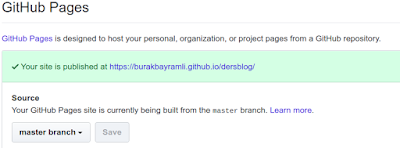

Github Pages, HTML Ders Notları
HTML Ders Notları
LaTeX ile yazılmış olan ders notları make4ht ile HTML'e çevirildi, ve alttaki adresten servis ediliyor.
https://burakbayramli.github.io/dersblog
HTML sayfalarını Github Pages ile servis ediyoruz. Github bilindiği gibi kaynak kod deposu Git üzerine kurulu, Pages servisi ile GH'da bir depoyu "servis edilebilir" olarak işaretleyince bu depo içindeki kod / sayfa [kullanıcı].github.io/[depo] üzerinden yayınlanabiliyor, yani depoya konan bir html dosyası bu adres üzerinden erişilebilir hale geliyor. Bu işaretleme işlemi depo | settings ve en alttaki kısımda sayfaların hangi kod dalından (branch) geldiğini seçince tamamlanıyor.
Google reklamları kullanmak isteyenler için iyi haber, Github bunun için bir kısıtlama getirmemiş, yani reklam kodunu html içine koyunca reklam yayınlanıyor.
Eğer Github Pages kendi şablonu üzerinen, mesela Slate şablonu üzerinden matematik formülleri servis etmek istersek, şurada anlatılıyor,
https://github.com/cjerdonek/gh-pages-theme-slate
ana dizinde /_layouts/default.html dosyasi yaratiriz, ve bu dosyaya
https://github.com/pages-themes/slate/blob/master/_layouts/default.html
görülen kodu koyarız. Bu kod mevcut Slate şablonu ile aynı kod, bu kodu olduğu gibi kullanınca öncesi sonrası hiçbir değişiklik görmemeniz lazım. Sonra bu kod içine istediğimiz ekleri yaparız, mesela MathJax için
<script type="text/x-mathjax-config">
MathJax.Hub.Config({
tex2jax: {inlineMath: [["$","$"],["\\(","\\)"]]}
});
</script>
<script type="text/javascript"
src="https://cdnjs.cloudflare.com/ajax/libs/mathjax/2.7.5/MathJax.js?config=TeX-AMS_HTML-full">
</script>
<head> içine eklenir, bundan sonra Markdown dosyamızda iki $$ arası formüller
gösterilecektir.
